Introduction
Throughout the tutorial we will build a Help Desk Tickets dashboard from start to finish. Let's get started!
Create an account
Go to the sign up page, enter all the information and create a new user account.
Corporation will be used later when log into mobile app.
Create a page
After log in, we will need to create a page first. A page is a "dashboard" screen that can be viewed later on mobile app. To create a new page, we can select Pages tab and click Add button.
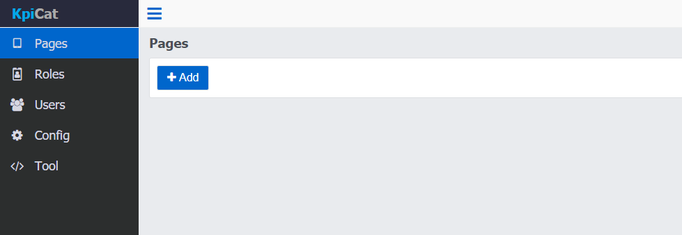On edit page screen, first enter the page information.
Page Name is also used in the mobile app as menu item.
Title Color defines the tool bar color in the moible app when this page is selected.
In layout designer, select the number of columns and then click Add Row button. A row with X number of columns will be added to the layout. In the tutorial, we add 4 rows. 2 of them have 2 columns.
The page layout is configured based on rows.
Each row can have up to 5 columns.
Each column is a component.
A row can be removed by selecting any columns within the row and then click Remove Row button. The
Entire Row will be removed.We will come back later to explain more on Component Id and Data
Click Save button then click Pages tab to view the page saved.
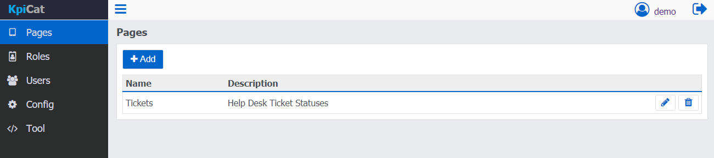Create a role
The next step is to create a role and assign the page to the role. Click Roles tab and click Add button. Enter Role Name and toggle the "Tickets" page we just created to on
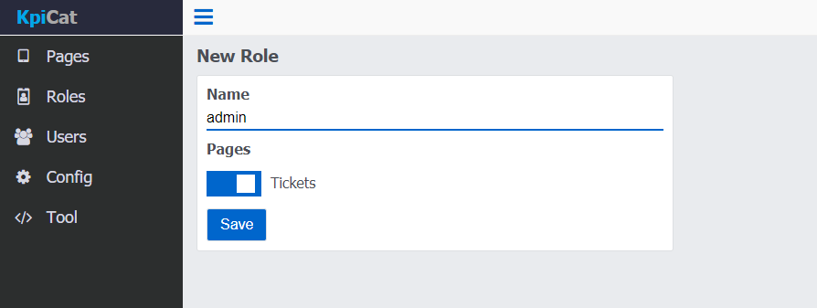Click Save button. The new role "admin" is created.
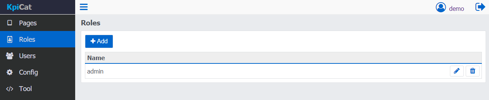Create a user
Now let's create a user for the end user who's going to use the mobile app to actually view the data. Select Users tab and click Add button. Enter the Username, Password and assign a Role to it. In this case, we create a user called "mike" and assigned the "admin" role to him so he gets the access to "Tickets" page.
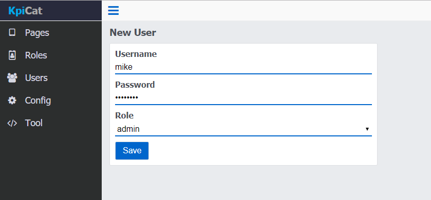Click Save button. The new user "mike" is created.
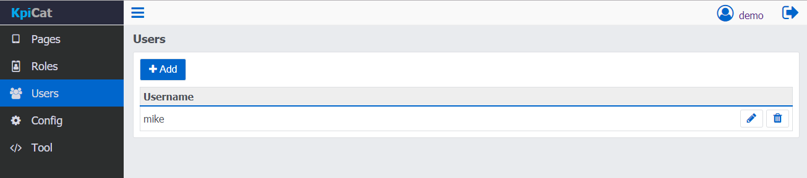Customize the app
Select the Config tab and we can see options to customize the color of the mobile app.
Change the Colors by selecting the color in palette. Don't forget to click Save button.
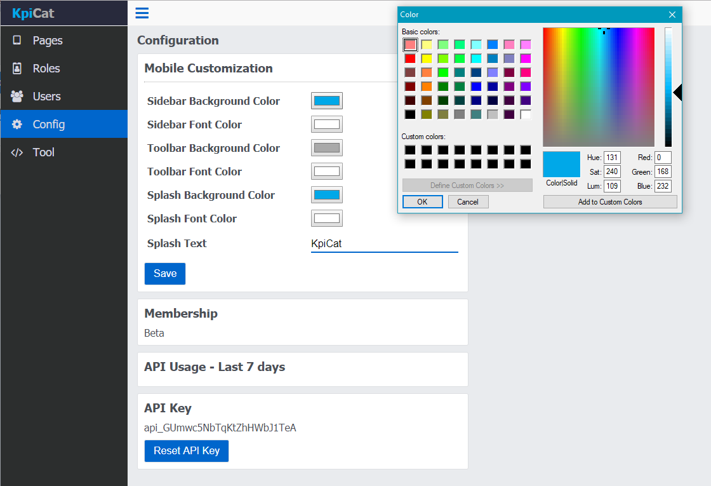The text displayed on splash page can also be modified. We changed it from "KpiCat" to "My Demo Company".in this case.
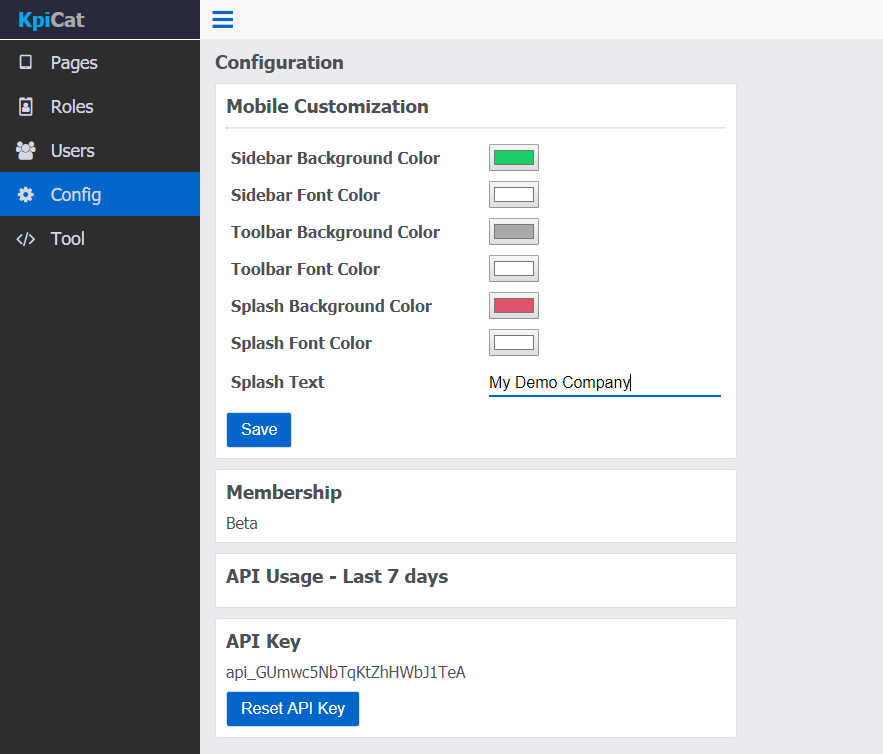Download the mobile app
We have done quite a bit in the web app. Now it's time to download the mobile app and see what we have accomplished. Go to the Google Play Store and download the Android App.
After open the app, we can login by using "mike"s account.
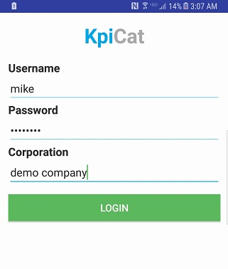A new page "Ticket" is found in the menu and its background color has been changed!
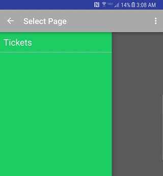Hmm but the dashboard page is empty. Let's work on it now!
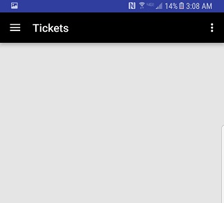Call REST api
Let's go back to the web app for a moment. Select Tool tab to see the API tool used to test the REST call. Check the API document for more details.
The first component that we are going to build is a Horizontal box to display a static text. Component Id and API Key are required for each component update.
The Component Id can be found on the "Tickets" page by clicking the first row. The API Key can be found on the Config page.
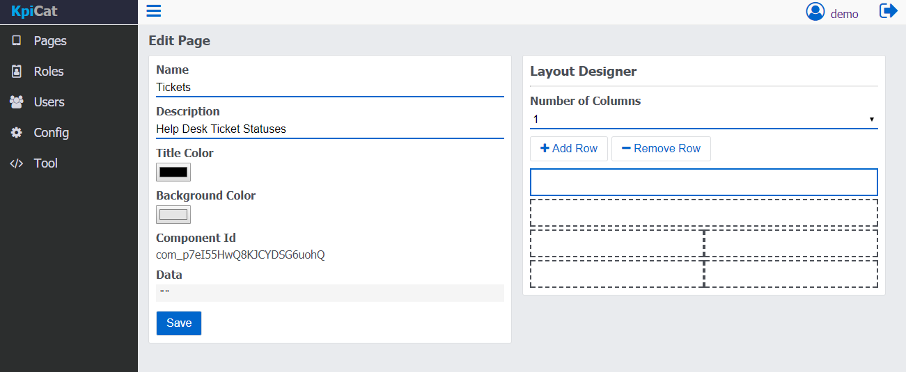The Horizontal box json is added to the request input based on the API document. Then click Send button to send the request. The response can be seen on the side.
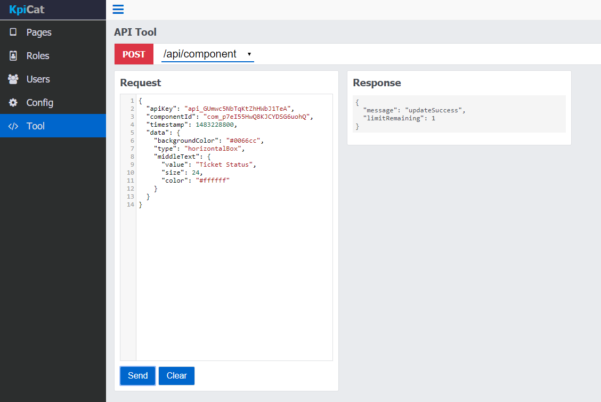Let's refresh the page on mobile app now by pulling down the view. A new component is added!
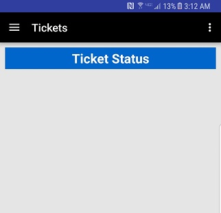Go back to "Tickets" page and select the second row to view the Component Id
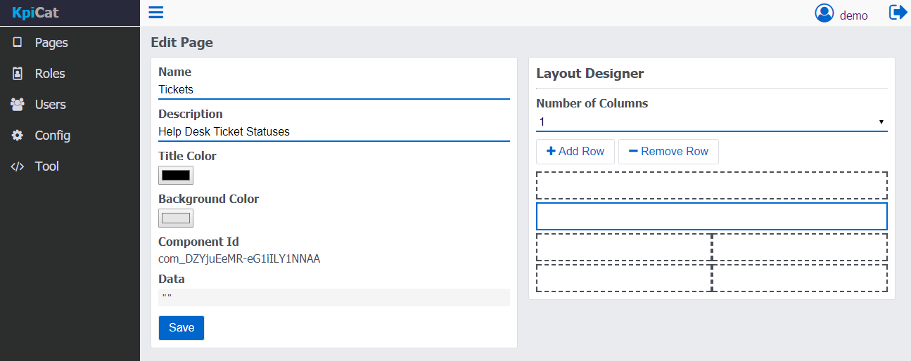This time we are going to build a component to show shift duration.
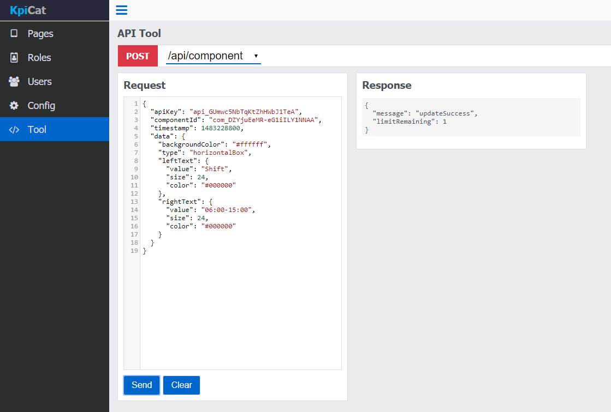Refresh the page in mobile app again and we can see another component created.
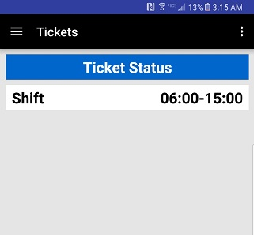With 4 more components added, the dashboard for Help Desk Ticket Statuses looks better. However, it looks weird that the "Shift" component is below "Ticket Status" component.
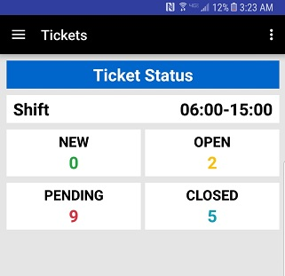Let's change it by dragging and dropping the second row in "Ticket" page to the first.
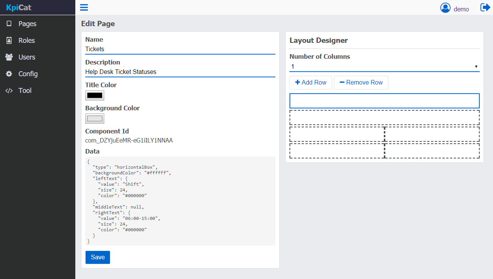Refresh the page and the dashboard is done!
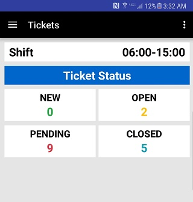While you are updating the component value, some thresholds might be reached. You can also call the notification api to send notifciations to the user.
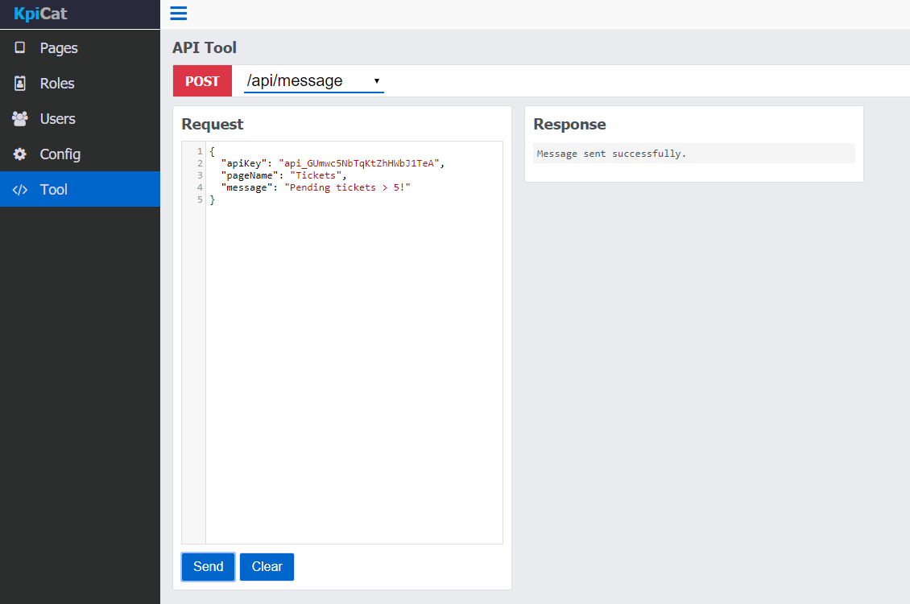A notifcation is received.
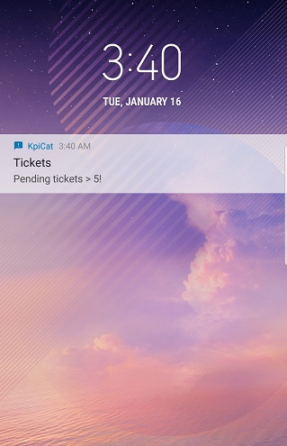Api Usage
API usage can be viewed on the Config page. All users are granted BETA account during BETA period which has 50,000 api call limits per day.
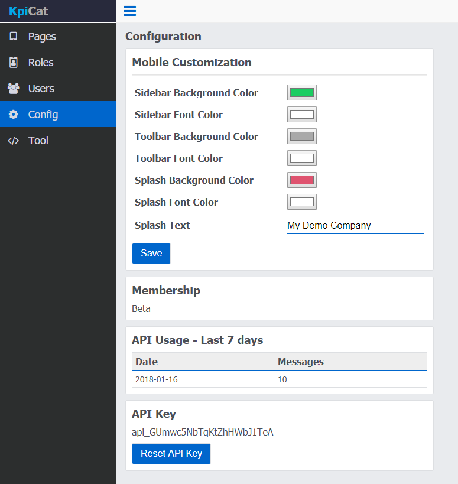Summary
Hopefully this tutorial has enough content to get you started! Now it is time to build your first dashboard in KpiCat and provide real time data to the end users by trying our REST Apis. Feel free to contact us if you have any questions!
FAQ
Why cannot I see pages on my mobile app?
Normally this is caused by misconfiguration of roles. Please check if pages are added to the role and if the user is assigned a role.
Is there a SDK available?
Yes, the Java SDK is being developed and will be released soon.